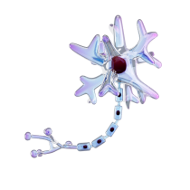
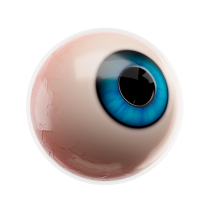
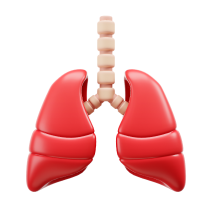
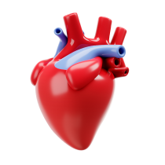
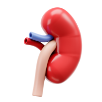
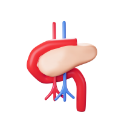
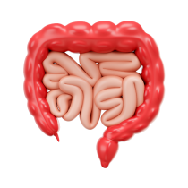
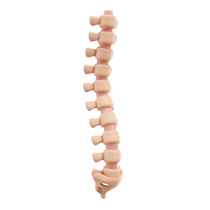

С возрастом меняются все внутренние системы: например, кости и суставы теряют гибкость, ткани сердца и сосудов становятся более жесткими, снижается выработка некоторых гормонов, слабеет иммунитет. В разных органах и тканях развиваются атрофические процессы. Как сохранить здоровье и активность, если вам за 75? Существует ли универсальный рецепт счастливого долголетия?
В этом разделе собраны советы и рекомендации, соблюдать которые под силу каждому. Они помогают сохранять силы, здоровье и как можно дольше вести активный образ жизни.
Физиология старения организма
Старение организма — это естественный физиологический процесс. В течение жизни в нашем теле происходит постоянное образование новых клеток и гибель изношенных. Эти процессы хорошо сбалансированы, но с возрастом отлаженные механизмы начинают давать сбой. В результате органы и системы перестают хорошо функционировать и появляются возрастные изменения, существенно снижаются резервные возможности организма. Процессы старения генетически запрограммированы, но время их появления и скорость развития зависит от факторов окружающей среды и образа жизни.
Давайте рассмотрим, что же происходит с возрастом в нашем теле. Некоторые изменения, например потеря пигмента волос или появление морщин, никак не связаны с ухудшением здоровья, а могут стать лишь психологической проблемой. Другие же значительно снижают качество жизни человека и могут иметь серьезные последствия.

Нервная система
Гибель клеток в нервной ткани приводит к ухудшению связи между отдельными клетками, ухудшается память, в тяжелых случаях наблюдается снижение функции мышления.
Предупредить такие серьезные последствия можно, постоянно тренируя наш мозг.
Такой тренировкой может служить как разгадывание кроссвордов, так и изучение иностранных языков.

Органы чувств
Потеря эластичности хрусталика проявляется «старческой дальнозоркостью», а его помутнение приводит к формированию катаракты.
Своевременное обследование у врача помогает вовремя скорректировать нарушение зрения.
Возрастные изменения функции клеток внутреннего уха ведут к снижению слуха.
В современном мире существует много возможностей коррекции глухоты.

Органы дыхания
С возрастом снижается способность легких к газообмену, в результате клетки получают меньше кислорода, что приводит к ухудшению работы организма в целом и повышает риски дополнительных инфекций.
Намного раньше эти естественные процессы развиваются у курящих пациентов, поэтому отказ от курения и прогулки на свежем воздухе позволяют улучшить здоровье наших легких и состояние организма в целом

Сердечно-сосудистая система
Сердце — это мышца, которая прокачивает кровь по сосудам, при этом клетки организма получают питательные вещества и кислород, а отдают продукты распада и углекислый газ. С возрастом наблюдается снижение силы сердечных толчков и нарушается ритм сердечных сокращений. В стенках сосудов откладывается холестерин и закупоривает их. Если эти отложения образуются на стенках сосудов самого сердца, то нарушается его кровоснабжение, самым тяжелым последствием является при этом инфаркт миокарда. Нарушение эластичности сосудистой стенки наряду с другими факторами приводит к повышению артериального давления. Предотвратить эти изменения можно, постоянно давая организму умеренную физическую нагрузку. Прогулки на свежем воздухе — это хорошая тренировка сердечной мышцы. А рациональное питание со снижением содержания животных жиров и отказ от курения — это отличная профилактика развития атеросклероза.

Мочевыделительная система
Гибель клеток почечной ткани приводит к тому, что продукты распада из организма удаляются медленнее. Нарушается баланс солей и жидкости, что внешне может проявляться как отеками, так и обезвоживанием. Неправильное питание и злоупотребление алкоголем, сопутствующие инфекции могут приводить к более быстрому снижению функции почек, а улучшить их работу можно, отказавшись от чрезмерно соленых, острых продуктов и алкоголя. Особое внимание следует уделять качеству питьевой воды.

Эндокринная система
С возрастом способность клеток поджелудочной железы вырабатывать инсулин снижается. Это приводит к дисбалансу глюкозы в крови и появляются все неблагоприятные эффекты опасного — сахарного диабета. Нарушается кровоток в самых мелких сосудах почек, глаз, конечностей. Наиболее грозные осложнения — слепота, почечная недостаточность и ампутация конечностей. Предотвратить эти негативные последствия можно, если придерживаться принципов здорового сбалансированного питания и воздерживаться от употребления алкоголя. При этом поджелудочная железа работает в обычном режиме, не перегружается, и ее ресурс не истощается.

Желудочно-кишечный тракт
Возрастными особенностями работы являются снижение выработки пищеварительных ферментов и замедление продвижения пищи по кишечнику. В результате появляется чувство тяжести и запоры. Важную роль в предупреждении этого играет дробное регулярное здоровое питание и умеренная физическая активность.

Опорно-двигательная система
Клетки костной ткани в течение жизни человека постоянно обновляются, а по мере старения организма начинают преобладать процессы гибели клеток, новые образуются не так активно и теряют способность к достаточному накоплению кальция. В результате костная масса снижается, а сами кости становятся хрупкими. Также с возрастом уменьшается количество мышечной массы. Снижается эластичность тканей суставов и, как следствие, уменьшается их подвижность. Однако замечено, если поддерживать умеренную физическую активность на протяжении всей жизни, данные негативные эффекты не так значительны. Тренировки способствуют повышению кровоснабжения мышц, костей и суставов и активизируют в них обменные процессы.